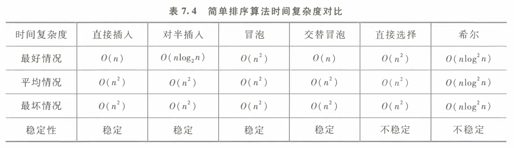
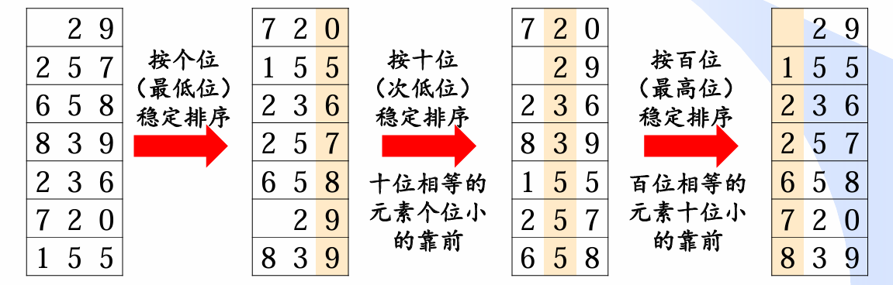

排序
定义
[!important]
排序(Sorting)是按关键字的非递减或非递增顺序对一组记录重新进行排列的操作
排序的稳定性：关键字相同的记录排序前后的相对位置不变
内排序
内部排序的过程是一个逐步扩大记录的有序序列长度的过程。在排序的过程中，可以将排序记录区分为两个区域：有序序列区和无序序列区。
使有序区中记录的数目增加一个或几个的操作称为一趟排序。
插入排序
每一趟将一个待排序的记录，按其关键字的大小插入到已经排好序的一组记录的适当位置上，直到所有待排序记录全部插入为止
- 插入排序
直接插入排序：将一条记录插入到已排好序的有序表中，从而得到一个新的、 记录数量增1的有序表。
//直接插人排序，O(n^2) //稳定排序,更适合于初始记录基本有序（正序）的情况 //也适用千链式存储结构，只是在单链表上无需移动记录，只需修改相应的指针 template<class T=int> void Straight_Insertion_Sort(T a[], int n) { //对顺序表L做直接插入排序 //数组从0开始，第零个元素已经有序,所以从1开始排序 for (int i = 1; i < n; i++) { //记录要插入的元素 T key = a[i]; //从i-1位置往前找位置,同时后移元素 int j = i - 1; while (j >= 0 && key < a[j]) { //后移 a[j + 1] = a[j]; j--; } //插入 a[j + 1] = key; } }
- 折半插入排序：在直接插入排序的基础上优化"查找"即找到插入位置，，这个 “查找＂ 操作可利用 “折半查找” 来实现
//折半插人排序，O(n^2) //在已经排序的有序数组里采用二分查找，提高找到插入位置的效率 //稳定排序,适合初始记录无序、n较大时的情况。 //只能用于顺序结构 template<class T = int> void Binary_Insertion_Sort(T a[], int n) { //对顺序表L做折半插入排序 for (int i = 1; i < n; i++) { //记录要插入的元素 T key = a[i]; //二分查找位置,在[0,i-1]找 int low = 0; int high = i - 1; while (low <= high) { //折半 int mid = (low + high) / 2; //更新搜索区间 if (key < a[mid])high = mid - 1; else low = mid + 1; } //找到插入位置，为high+1(/low) //后移元素,high+1(/low) for (int j = i - 1; j >= high + 1; j--)a[j + 1] = a[j]; //插入 a[high + 1] = key; } }
- 希尔排序（缩小增量排序）
采用分组插入的方法。先将整个待排序记录序列分割成几组，从而减少参与直接插入排序的数据量，对每组分别进行直接插入排序，然后增加每组的数据量，重新分组。 这样 当经过几次分组排序后，整个序列中的记录“基本有序” 时，再对全体记录进行一次直接插入排序。
希尔对记录的分组，不是简单地 ”逐段分割＂，而是将相隔某个 “增量” 的记录分成一组。
具体步骤
- 将待排序序列分为若干子序列（每个子序列的元素在原始数组中间距相同
- 对这些子序列进行插入排序
- 减小每个子序列中元素之间的间距，重复上述过程直至间距减少为1。
//记录跳跃式地移动导致排序方法是不稳定的，只能用于顺序结构
//n越大时，效果越明显。所以适合初始记录无序、n较大时的情况
template<class T>
void ShellSort(T a[], int n)
{
//初始化间隔 h，使用 Knuth 序列计算使其小于数组长度的最大值
int h = 1;
//生成最大增量
while (h < n / 3)
{
h = 3 * h + 1;
}
//进行希尔排序，逐渐减少间隔 h，直到 h 减小到 1（最后一次遍历）
while (h >= 1)
{
//对每一个间隔为 h 的子数组进行插入排序
for (int i = h; i < n; i++)
{
//将 a[i] 插入到其对应的子数组中的正确位置
for (int j = i; j >= h && a[i] < a[j - h]; j -= h)
{
std::swap(a[j], a[j - h]);//类似后移
}
}
// 缩小间隔，使 h 逐渐减小，最终变为 1
h = h / 3;
}
}
- 可以提前生成增量序列
template<class T>
void ShellSort_C(T a[], int n,int t,int dk[])
{
//dk[]存放着生成好的增量序列
//有多种增量序列
//希尔增量序列（2^k - 1）
//Hibbard增量序列（1, 3, 7, 15, ...）
//Sedgewick增量序列（1, 5, 19, 41, ...）
for (int i = 0; i < t; i++)
{
Shellinsert_C(a, n, a[i]);
}
}
//进行一趟希尔排序
template<class T>
void Shellinsert_C(T a[], int n,int dk)
{
int d = dk;//此次增量
//插入排序
for (int i = d; i < n; i++)
{
int j;
if (a[i] < a[i - d])
{
//存在无序
int key = a[i];
//插入
for (j = i - d; j >= 0 && key < a[j]; j -= d)
{
a[j + d] = a[j];
}
a[j + d] = key;
}
}
}
交换排序
两两比较待排序记录的关键字，一旦发现两个记录不满足次序要求 时则进行交换，直到整个序列全部满足要求为止。
- 冒泡排序
通过两两比较相邻记录的关键字， 如果发生逆序，则进行交换，从而使关键字小的记录如气泡一般逐渐往上 ＂漂浮＂ （左移），或者使关键字大的记录如石块一样逐渐向下 ＂坠落” （右移）。
//冒泡排序，O(n^2),当数组为完全逆序时最坏需要比较n*(n-1)/2次
//两两比较相邻记录的关键字，如果发生逆序，则进行交换
//稳定排序,可用于链式存储结构
//当初始记录无序，n较大时
template<class T=int>
void Bubble_Sort(T a[], int n)
{
//设置交换标识,开始时假设有交换
bool flag = true;
//只要一趟起泡排序有交换就继续
while (flag)
{
//假设无交换
flag = false;
//遍历找逆序
for (int i = 0; i < n - 1; i++)
{
//有逆序则交换
if (a[i] > a[i + 1])
{
std::swap(a[i], a[i + 1]);
//重置标识
flag = true;
}
}
}
}
- 改进
//一趟比较中，当比较结束，发现从某个位置t开始不再交换，则说明t及以后的记录有序
//从而下一趟比较进行到t即可
template<class T = int>
void Bubble_Sort_modify(T a[], int n)
{
if (n <= 1)return;
//停止标识
int stop = n-1;
while (stop!=0)
{
//一趟冒泡排序记录交换的最后位置，-1表示无记录交换
int t = 0;
for (int i = 0; i < stop; i++)
{
if (a[i + 1] < a[i])
{
//交换并记录交换位置
std::swap(a[i], a[i + 1]);
t = i;
}
}
stop = t;
}
}
- 双向冒泡
//双向冒泡排序，上浮和下沉交替进行
template<class T = int>
void Double_Bubble_Sort(T* a, int n) {
// 上浮和下沉的区域
int left = 0;
int right = n - 1;
bool swapped = true;
while (left <= right && swapped) {
swapped = false;
// 上浮，大数往后移
for (int i = left; i < right; i++) {
if (a[i + 1] < a[i]) {
std::swap(a[i], a[i + 1]);
swapped = true;
right = i; // 更新右边界
}
}
// 下沉，小数往前移
for (int i = right; i > left; i--) {
if (a[i] < a[i - 1]) {
std::swap(a[i], a[i - 1]);
swapped = true;
left = i; // 更新左边界
}
}
}
}
快速排序
由冒泡排序改进而得的，能通过两个（不相邻） 记录的一次交换消除多个逆序，大大加快排序的速度。
平均情况下，快速排序的时间复杂度为O(n*log2n)。
快速排序是递归的，执行时需要有一个栈来存放相应的数据。最大递归调用次数与递归树的 深度一致，所以最好情况下的空间复杂度为O(log2n），最坏情况下为O(n)。
具体步骤：
待排序的n个记录中任取一个记录（通常取第一个记录）作为枢轴（或支点），又称为基准，经过一趟排序后，将枢轴放置在排序好的的位置，即左边比基准小，右边比基准大，结果将待排序记录分成两个子表，分别 对左、右子表重复上述过程，直至每一子表只有一个记录时
对于快速排序有多个版本，其中取基准的办法也有多种，单趟排序也有不同。
严蔚敏《数据结构》标准分割函数，取待排序的表中第一个记录作为基准，但这样的话，如果待排序的表基本有序或者已经有序，会导致快速排序进入”陷阱“，重新使得记录无序化，时间复杂度变为最坏
O(n^2)//严蔚敏《数据结构》标准分割函数 template<class T=int> void Quick_Sort_C(T a[], int left, int right) { int low = left; int high = right; //退出递归 if (low >= high)return; //这里选择第一个作为脊椎 T pivot = a[low]; //类似左右指针 while (low < high) { //右指针左移直到小于基准 while (low < high && a[high] >= pivot) --high; //交换 a[low] = a[high]; //左指针右移直到大于基准 while (low < high && a[low] <= pivot) ++low; //交换 a[high] = a[low]; } //放回基准值，此时low和high重合，左边的元素小于基准，右边的元素大于基准 a[low] = pivot; //排序左区间 Quick_Sort_C(a, left, low - 1); //排序右区间 Quick_Sort_C(a, low + 1, right); }为了避免快排进入"陷阱"，对取基准进行改进
选择基准，一般选第一个或者最后一个，但是如果数组本来有序会导致效率低
可以三数取中（即选取第一个、最后一个以及中间的元素中的中位数）或者随机取数，以及中位数中的中位数
下面为取基准的方法，可以优化快速排序
三数取中
int getmid(T array[], int left, int right) { //获取中间值下标 int mid = left + (right - left) / 2; //当left<mid if (array[left] < array[mid]) { //如果mid<right if (array[mid] < array[right]) { return mid; } else { //left>right if (array[left] > array[right]) { return left; } else { return right; } } } else { //如果mid>right if (array[mid] > array[right]) { return mid; } else { //left>right if (array[left] > array[right]) { return left; } else { return right; } } } }
中位数中的中位数
- 算法的流程如下：
- 将整个序列划分为n/5组，每组元素数不超过 5 个；
- 寻找每组元素的中位数（因为元素个数较少，可以直接使用 插入排序 等算法）。
- 找出这n/5组元素中位数中的中位数。将该元素作为前述算法中每次划分时的分界值即可。
- 不考虑实现
随机取数法
//随机法 int getrandom(T array[], int left, int right) { std::random_device rd; // 获取随机设备 std::mt19937 gen(rd()); // 使用 Mersenne Twister 随机数生成器 std::uniform_int_distribution<> size_dis(left, right); return size_dis; }
- 处理完基准问题，这里给出快排的模板
//进行多趟排序相同一起实现,递归实现
void Sort(T array[], int left, int right)
{
//退出递归条件
if (left >= right)return;
int idxkey = Partion(array, left, right);
//继续排序左区间
Sort(array, left, idxkey - 1);
//排序右区间
Sort(array, idxkey + 1, right);
}
//进行多趟排序相同一起实现,非递归实现
//一个栈来保存需要处理的数组区间,
//如果某个子数组的元素数量少于等于1，则不需要入栈处理
void SortNoR(T a[], int left, int right)
{
//工作栈存放左右边界
std::vector<std::pair<int, int>> stack;
//存放开始左右边界
stack.push_back({ left,right });
//当栈不空
while (!stack.empty())
{
//取出左右边界
auto p = stack.back();
stack.pop_back();
////使用一次单趟的快排得到第一次的基准值
int key = Partion(a, left, right);
//将基准值的左右边界入栈
if (key + 1 < right)
{
//右边
stack.push_back({ key + 1,right});
}
if (left < key - 1)
{
//左边
stack.push_back({ left,key - 1 });
}
}
}
- 其中Partion有多个版本，利用多态实现。
- 前后指针法，现在最常用的方法。
- 但是在数组中间有大量相同数时效率低下，详见数组中的第K个最大元素
//可以先三数取中交换后，再选取数组的第一个元素作为基准数key template<class T> class FroandBack :public QuickSort<T> { //返回左右区间的分界处，此处区间为左右闭区间即[left,right] int Partion(T array[], int left, int right) { int prev = left; int cur = left + 1; //三数取中选定基准后与第一个数交换 int key = QuickSort<T>::getmid(array, left, right); std::swap(array[key], array[left]); int idxkey = left;//当前排序基准位置 while (cur <= right) { //当cur找到比基准值小的值，cur与prev++位置的值交换 if(array[cur] <= array[idxkey] && ++prev != cur) { swap(cur, prev); } //当前指针后移 ++cur; } //最后cur越界（识别完所有的数据），交换prev和基准位置的值 swap(prev, idxkey); //更新新基准位置 idxkey = prev; return idxkey; } };
- 霍尔快排，最经典的快速排序，多用于教材。
template<class T> class Hoare :public QuickSort<T> { int Partion(T array[], int left, int right) { //用三数取中法得到key的位置 int key = QuickSort<T>::getmid(array, left, right); std::swap(array[key], array[left]); //当前排序基准位置 int idxkey = left; while (left < right) { //右边左移找较小值 while (left < right && array[right] >= array[idxkey]) --right; //左边右移找较大值 while (left < right && array[left] <= array[idxkey]) ++left; //交换 swap(left, right); } //left和right相遇，交换 swap(left, idxkey); //新基准位置 idxkey = left; return idxkey;//返回基准位置 } };
- 挖坑法，最容易理解的办法
template<class T> class Hole : public QuickSort<T> { int Partion(T* array, int left, int right)//类似于Hoare { //用三数取中法得到key的位置 int idxkey = QuickSort<T>::getmid(array, left, right); std::swap(array[idxkey], array[left]); T key = array[left];//储存基准值 int hole = left;//第一个坑 while (left < right) { //右边左移找较小值 while (left < right && array[right] >= key) { --right; } array[hole] = array[right];//填坑 hole = right;//新坑 //左边右移找较大值 while (left < right && array[left] <= key) { ++left; } array[hole] = array[left]; hole = left; } //填最后一个坑马，并且最后一个坑为新基准 array[hole] = key; return hole; } };
- 快速排序的改进
- 三路划分法:
- 为了解决当数组中存在大量重复元素时，传统的快速排序算法会导致不必要的比较和交换操作数组中存在大量重复元素问题
- 小的甩到左边，大的甩到右边，与 key 值相等的值则推到中间
- 最后记录表变为[ begin , left-1 ] [ left , right ] [ right + 1 , end ]
template<class T=int> void Quick_Sort_Threeroad(T a[], const int n) { if (n <= 1)return; //随机法取基准 const T pivot = a[rand() % n]; // i：当前操作的元素下标 int i = 0; // arr[0, left)：存储小于 pivot 的元素 int left = 0; // arr[right, len)：存储大于 pivot 的元素 int right = n; // 完成一趟三路快排，将序列分为： // 小于 pivot 的元素 | 等于 pivot 的元素 | 大于 pivot 的元素 //这里类似于前后指针法 while (i < right )//往前遍历 { // 小于基准的元素交换到左边同时前移i if (a[i] < pivot) { std::swap(a[i++], a[left++]); } // 大于基准的元素交换到右边同时前移i else if (pivot < a[i]) { //新交换过来的元素可能还是大于基准的，因此我们不急于让 i 继续向前遍历。 std::swap(a[i], a[--right]); } // 相等的元素直接跳过不操作，只是前移i else i++; } Quick_Sort_Threeroad(a, left); Quick_Sort_Threeroad(a + right, n - right); }
- 小区间改造法：
- 当子区间的大小足够小时，可以考虑使用插入排序来代替递归调用提高效率，并通过设置一个阈值来决定是否使用插入排序
//Insertion_Sort为插入排序 template<class T=int> void Quick_Insert_Sort(T *a, int n) { if (n <= 1)return; //类似三路划分 //随机法取基准 const T pivot = a[rand() % n]; // i：当前操作的元素下标 int i = 0; // arr[0, left)：存储小于 pivot 的元素 int left = 0; // arr[right, len)：存储大于 pivot 的元素 int right = n; // 完成一趟三路快排，将序列分为： // 小于 pivot 的元素 | 等于 pivot 的元素 | 大于 pivot 的元素 while (i < right)//往前遍历 { // 小于基准的元素交换到左边同时前移i if (a[i] < pivot) { std::swap(a[i++], a[left++]); } // 大于基准的元素交换到右边同时前移i else if (pivot < a[i]) { //新交换过来的元素可能还是大于基准的，因此我们不急于让 i 继续向前遍历。 std::swap(a[i], a[--right]); } // 相等的元素直接跳过不操作，只是前移i else i++; } //设置闸值为10 //快排::小区间优化，因为插入排序在小数组上的性能往往比快速排序更好。 if (n - right > 10) { Quick_Insert_Sort(a + right, n - right); } else { Insertion_Sort(a + right, n - right); } if (left > 10) { Quick_Sort_Threeroad(a, left); } else { Insertion_Sort(a, left); } return; }
- 内省排序：
- 快速排序和 堆排序 的结合
- 内省排序将快速排序的最大递归深度限制为[log2_n]，超过限制时就转换为堆排序。
- 这样既保留了快速排序内存访问的局部性，又可以防止快速排序在某些情况下性能退化为 O(n^2)，
- 快速排序在某些情况下性能退化为 O(n^2)又称为快速排序落入陷阱
//Heap_Sort为堆排序。 template<class T = int> void Introspective_Sort(T* a, int n,int deep) { if (n <= 1)return; //判断快速排序是否落入陷阱，并设阈值为2logn if (deep >= 2 * log2(n)) { Heap_Sort(a,n); return; } //类似三路划分 //随机法取基准 const T pivot = a[rand() % n]; // i：当前操作的元素下标 int i = 0; // arr[0, left)：存储小于 pivot 的元素 int left = 0; // arr[right, len)：存储大于 pivot 的元素 int right = n; // 完成一趟三路快排，将序列分为： // 小于 pivot 的元素 | 等于 pivot 的元素 | 大于 pivot 的元素 while (i < right)//往前遍历 { // 小于基准的元素交换到左边同时前移i if (a[i] < pivot) { std::swap(a[i++], a[left++]); } // 大于基准的元素交换到右边同时前移i else if (pivot < a[i]) { //新交换过来的元素可能还是大于基准的，因此我们不急于让 i 继续向前遍历。 std::swap(a[i], a[--right]); } // 相等的元素直接跳过不操作，只是前移i else i++; } Introspective_Sort(a, left,deep+1); Introspective_Sort(a + right, n - right,deep+1); return; }
选择排序
每一趟从待排序的记录中选出关键字最小的记录，按顺序放在已排 序的记录序列的最后，直到全部排完为止
由于 swap（交换两个元素）操作的存在，选择排序是一种不稳定的排序算法。
- 简单选择排序（直接选择排序），每趟排序在未排序的记录中找到关键词最小的记录加入有序子表里。
//简单选择排序 (SimpleSelection Sort)也称作直接选择排序。O(n^2)
//移动记录次数较少，当每一记录占用的空间较多时，此方法比直接插入排序快。
template<class T=int>
void Simple_Selection_Sort(T* a, int n)
{
//找到n-1次最小值就已经有序了，
for (int i = 0; i < n - 1; i++)
{
//交换的位置
int ith = i;
//找到最未排序的最小值,选择排序可以从这里入手提高效率
for (int j = i + 1; j < n; j++)
{
if (a[j] < a[ith])ith = j;
}
//交换
std::swap(a[ith], a[i]);
}
}
堆排序：
- 利用 二叉堆 这种数据结构所设计的一种排序算法
- 堆排序的本质是建立在堆上的选择排序
- 或者说是将待排序的记录a[l..n]看成是一棵完全二叉树的顺序存储结构
具体步骤：
调整数组变为大根堆，自下而上建堆
依次取最大值并重新调整数组为大根堆
```cpp //首先建立大顶堆,小数往下筛,大数往上浮 template
void sift_down(T* a, int start, int end) { //父节点 int parent = start; //子节点，因为从零开始，所以子节点为parent*2+1，parent*2+2（完全二叉树性质 int child = parent * 2 + 1; //存在child,即子节点编号在区间[start,end]内（完全二叉树性质） while (child <= end) { //比较两个子节点（如果存在），取大值与父节点交换，使父节点大于两个子节点，形成大根堆 if (child + 1 <= end && a[child] < a[child + 1])child++; //已经是大根堆 if (a[child] <= a[parent]) { return; } else { std::swap(a[parent], a[child]); //往下调整 parent = child; child = parent * 2 + 1; } }}
//这里为堆排序完整实现
template
//从最后一个节点的父节点完成堆化，因为数组从零开始，所以最后一个节点为n-1-1，即自下而上建堆。
for (int i = (n - 1 - 1) / 2; i >= 0; i--)
{
sift_down(a, i, n - 1);
}
//建完堆
//将第一个元素和已排序的前一位交换，接着重新调整，
//将大数往上，小数往下，即重新找到下一个要排序的大数
for (int i = n - 1; i > 0; i--)
{
//i为要交换的位置，即第n-i大的数
std::swap(a[0], a[i]);
//重新调整，但是结束区间不包括已排序值
sift_down(a, 0, i - 1);
}
}
### 归并排序
两个或两个以上的有序表合并成一个有序表
归并排序的时间复杂度为O(nlog2n)，稳定排序。
具体步骤：
> 假设初始序列含有n个记录，则可看成是 n个有序的子序列
>
> 每个子序列的长度为1,然后两两归并，得到`[n/2]`个长度为2或1的有序子序列；
>
> 如此重复，直至得到一个长度为n 的有序序列为止
```cpp
//归并排序最核心的部分是合并（merge）过程：
//将两个有序的数组 a[i] 和 b[j] 合并为一个有序数组 c[k]。
template<class T=int>
void merge(const T* a, size_t alen, const T* b, size_t blen, T* c)
{
//三个数组的工作指针
size_t i = 0, j = 0, k = 0;
//遍历比较
while (i < alen && j < blen)
{
//先判断 b[j] < a[i]，保证稳定性
if (b[j] < a[i])
{
c[k] = b[j];
++j;
}
else
{
c[k] = a[i];
++i;
}
//后移c的工作指针
++k;
}
// 此时一个数组已空，另一个数组非空，将非空的数组并入 c 中
for (; i < alen; ++i, ++k) c[k] = a[i];
for (; j < blen; ++j, ++k) c[k] = b[j];
}
//pointer-style merge
template<class T = int>
void merge(const T* a, const T* a_end, const T* b, const T* b_end, T* c)
{
//三个数组的工作指针
size_t i = 0, j = 0, k = 0;
int alen = a_end - a;
int blen = b_end - b;
//遍历比较
while (i < alen && j < blen)
{
//先判断 b[j] < a[i]，保证稳定性
if (b[j] < a[i])
{
c[k] = b[j];
++j;
}
else
{
c[k] = a[i];
++i;
}
//后移c的工作指针
++k;
}
// 此时一个数组已空，另一个数组非空，将非空的数组并入 c 中
for (; i < alen; ++i, ++k) c[k] = a[i];
for (; j < blen; ++j, ++k) c[k] = b[j];
}
//注意下面的代码所表示的区间分别是 [l, r)，[l, mid)，[mid, r)。
//分治法实现归并排序
template<class T=int>
void Merge_Sort(T* a, int l, int r)
{
//当数组长度为 1 时，该数组就已经是有序的，不用再分解
if (r - l <= 1)return;
//当数组长度大于 1 时，该数组很可能不是有序的。此时将该数组分为两段
int mid = l + ((r - l) >> 1);
//分治左右区间
Merge_Sort(a, l, mid);
Merge_Sort(a, mid , r);
//创建临时数组
T* temp = new T[r - l];
//合并
merge(a + l, a + mid, a + mid, a + r, temp);
//返回
for (int i = 0; i < r - l; i++)
{
a[i + l] = temp[i];
}
//释放空间
delete[] temp;
}
- 非递归
//倍增法实现非递归的归并排序
template<class T=int>
void Merge_sort(T* a, size_t n)
{
//临时数组
T* temp = new T[n];
//seg表示要合并的段的大小，每次翻倍
for (size_t seg = 1; seg < n; seg <<= 1)
{
//从 left1 开始，将数组分为两段 [left1, right1) 和 [left2, right2)。
//每次步长为 seg + seg，即跳过两个段的长度。
for (size_t left1 = 0; left1 < n - seg; left1 += seg + seg)
{
size_t right1 = left1 + seg;
size_t left2 = right1;
//使用 std::min 确保第二段的右边界不会超过数组长度 n（处理最后一段）。
size_t right2 = std::min(left2 + seg, n);
//合并
merge(a + left1, a + right1, a + left2, a + right2, temp + left1);
//返回
for (size_t i = left1; i < right2; ++i) a[i] = temp[i];
}
}
//释放空间
delete[] temp;
}
基于关键词比较的排序算法分析
以上的排序算法是建立在记录关键词比较的基础上，即根据关键词比较结果，变换记录位置实现排序。
平方阶排序算法及改进算法
最坏情况下时间复杂度为平方阶的排序算法称为简单排序算法，包括直接插入、冒泡、交替冒泡、直接选择、对半插入 希尔(Shell)等排序算法
简单排序算法都是通过两层循环实现的。

线性对数阶排序算法
合并排序、快速排序和堆排序算法

- 结论：基于关键词比较的排序算法下界：O(nlog2n)。即任何基于关键词比较的排序算法在最坏情况下的比较次数都大于等于
nlog2n.
分布排序
非基于关键词比较的排序算法，而是基于分配、收集的排序算法，其中分配排序的基本思想为：排序过程无须比较关键字，而是通过"分配"和"收集"过程来实现排序
时间复杂度可达到线性阶：O(n)
基数排序
元素的关键词由多个域构成，即K=Kd,Kd-1,…,K2,K1
- 若每个域为英文字母，则关键词即英文单词
- 若每个域为1位十进制数字(0~9),则关键词即d位十进制数
- 自K1至Kd（自低位向高位），依次以各域为序进行稳定排序

- 计数排序
//计数排序,只适用于元素集中于一个范围的排序
template<class T=int>
void Counting_Sort(T* elem,int n)
{
//求最大值和最小值
T max = elem[0];
T min = elem[0];
for (int i = 0; i < n; i++)
{
if (elem[i] > max)max = elem[i];
if (elem[i] < min)min = elem[i];
}
//元素范围
int gap = max - min;
//统计数组个数
int* count_a = new int[gap + 1];
//初始化count_a
for (int i = 0; i < gap + 1; i++)
count_a[i] = 0;
//特殊类型需要重载运算符"-"
for (int i = 0; i < n; i++)
//根据关键词计数
count_a[elem[i] - min]++;
for (int i = 1; i < gap + 1; i++)
//计算元素所在位置
count_a[i] += count_a[i - 1];
//临时数组
T* sorted_a = new T[n];
for (int i = n - 1; i >= 0; i--)
{
//如果有重复元素则位置减一
int idx = --count_a[elem[i] - min];
sorted_a[idx] = elem[i];
}
//返回
for (int i = 0; i < n; i++)
{
elem[i] = sorted_a[i];
}
//释放空间
delete[] sorted_a;
}
- 桶排序
template<class T = int>
void Bucket_Sort(T* elem, int n)
{
if (n <= 0)return;
//求最大值和最小值
T max = elem[0];
T min = elem[0];
for (int i = 0; i < n; i++)
{
if (elem[i] > max)max = elem[i];
if (elem[i] < min)min = elem[i];
}
int size = 1, cnt = 1;
if (n != 0)
{
//桶中数组范围
size = (max - min) / n + 1;
}
if (n != 0)
{
//桶数(至少为一
cnt = (max - min) / size + 1;
}
//创建桶
std::vector<std::vector<T>> buckets(cnt);
//放入桶中
for (int i = 0; i < n; i++) {
//判断元素在哪个范围，即在哪个桶
int idx = (elem[i] - min) / size;
//入桶
buckets[idx].push_back(elem[i]);
}
//分别利用关键词比较排序每个桶
for (int i = 0; i < cnt; i++)
{
sort(buckets[i].begin(), buckets[i].end());
}
int index = 0;
//重新放入原数组
for (int i = 0; i < cnt; i++)
{
for (int j = 0; j < buckets[i].size(); j++)
{
elem[index++] = buckets[i][j];
}
}
}
外排序
排序过程既需要内存储器又需要外存储器